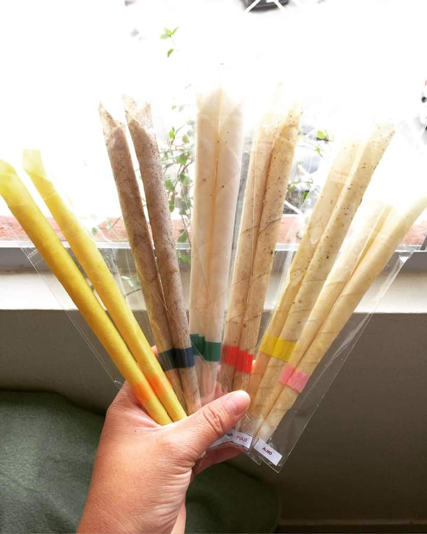

Linha Queridíssimos

Atacado - R$ 18,00 o par
Varejo - R$ 25,00 o par
Cone de Açafrão
O Açafrão é a erva que carrega o poder da verdade.
- O cone de acafrão é indicado para ser utilizado em pessoas que precisam tomar grandes decisões
- Traz clareza mental
- Traz senso de direção
- Auxilia a ter boas práticas na vida, pois induz a boas condutas
- Traz ética
- Diminui a necessidade de mentir
Cone de Alecrim
O Alecrim é conhecido como a erva da alegria pois ele promove bem estar e acalma!
- O cone de alecrim é indicado para ser utilizado em pessoas ansiosas
- Auxilia no tratamento de depressão
- Combate o stress
- Alivia tosse, gripe e asma
- Estimula o fluxo sanguineo
- Possui propriedades antioxidantes e é essencial para o sistema nervoso.
Cone de Camomila
A Camomila possui propriedades calmantes e sedativas.
- O cone de camomila é indicado para pessoas que sofrem de crises de ansiedade e insonia e com pico de stress elevado.
- Ajuda a diminuir picos de ansiedade
- Ajuda a combater bacterias
- Aumenta a imunidade
- Proporciona relaxamento profundo